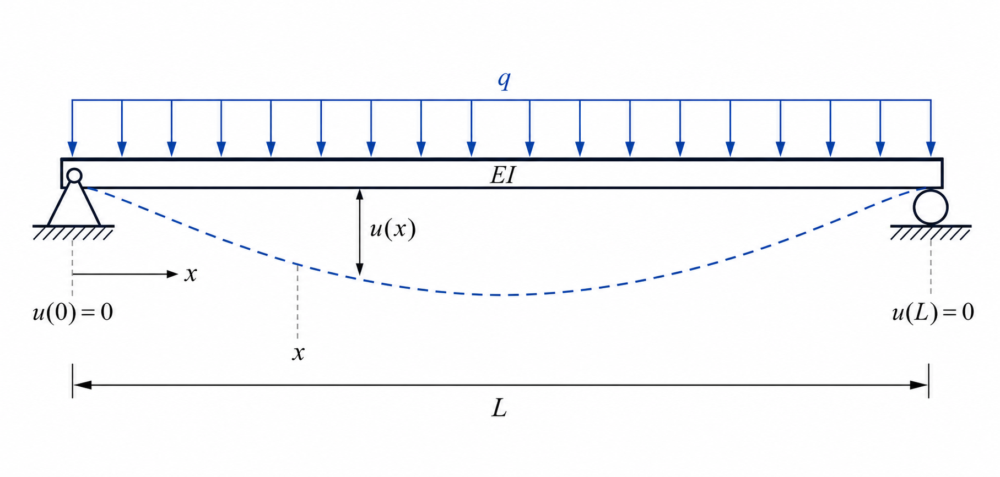
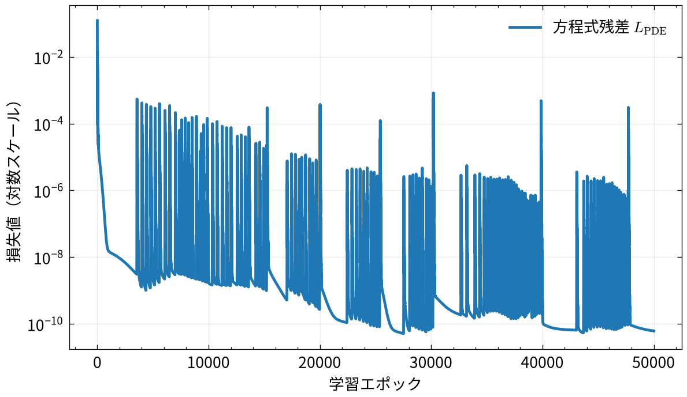
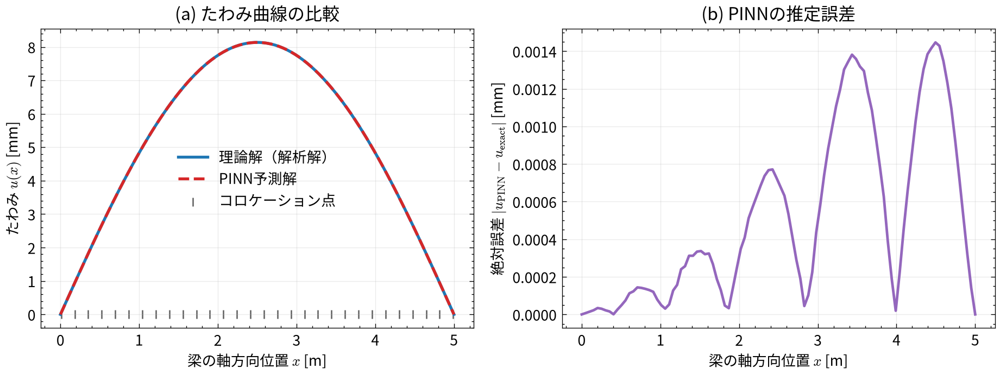
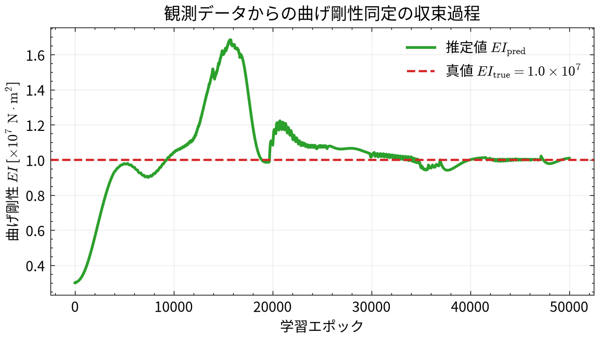
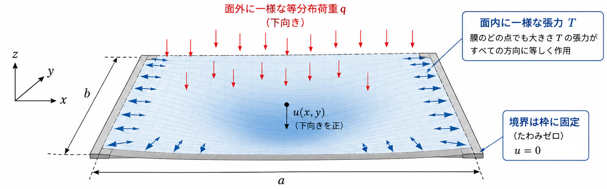
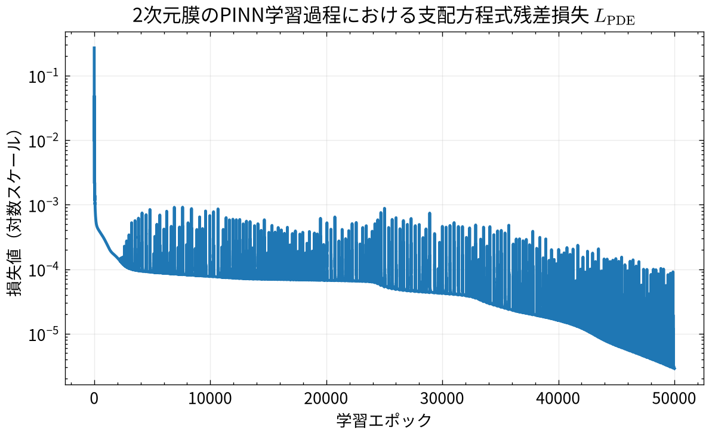
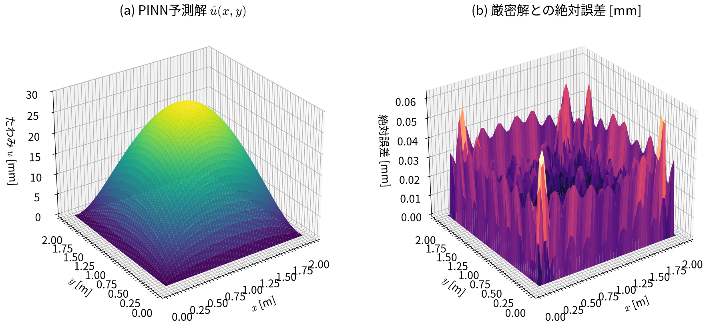

import torch
import torch.nn as nn
import torch.optim as optim
# 物理定数
L = 5.0 # 支間長 [m]
q = 1.0e4 # 等分布荷重 [N/m]
EI = 1.0e7 # 曲げ剛性 [N*m^2]
# 厳密解の定義
def exact_solution(x):
return (q * x / (24 * EI)) * (L**3 - 2 * L * x**2 + x**3)4 Physics-Informed Neural Networks
4.1 この章で学ぶこと
前章までの多層パーセプトロン（MLP）は、与えられた入出力データに適合するようにパラメータを最適化する「純粋なデータ駆動型（data-driven）」のアプローチでした。
本章では、物理学や構造力学の基礎方程式（微分方程式）をニューラルネットワークの損失関数に直接組み込む Physics-Informed Neural Networks（PINN：物理法則に基づくニューラルネットワーク） を扱います。
本章の目的は、次の事項を理解することです。
- データ駆動型アプローチの限界と物理法則を融合する意義
- PINNの基本原理と自動微分による微分の計算
- 支配方程式残差（PDE Loss）と境界条件損失（BC Loss）の設計
- 順問題（Forward Problem）：データを用いずに微分方程式から解を求める
- 逆問題（Inverse Problem）：少数の観測データから未知の物理パラメータを同定する
- PyTorchによるPINNの実装と梁の力学問題への適用
4.2 データ駆動から物理情報駆動（Physics-Informed）へ
4.2.1 純粋なデータ駆動型アプローチの課題
前章で学んだ通常のMLPは、観測データ \((x_i, y_i)\) を集め、それらに対する平均二乗誤差（MSE）を最小化するように学習します。しかし、工学問題に適用する場合、次のような課題に直面することがあります。
- 外挿性能の欠如：学習データの範囲外では、物理法則に反する不合理な予測をしてしまう。
- 大量の実験・計測データへの依存：高精度なモデルを得るためには膨大なデータが必要であり、実験コストやセンサー設置コストが膨大になる。
- ノイズに対する過学習：観測ノイズを含むデータに過剰に適合し、物理的に滑らかな真の解から乖離してしまう。
4.2.2 物理法則をネットワークに教え込む
工学の多くの問題では、対象の振る舞いを記述する支配方程式（偏微分方程式や常微分方程式）や境界条件がすでに分かっている場合が多いです。
PINN（Raissi et al., Journal of Computational Physics, 2019）は、この「物理法則」をニューラルネットワークの損失関数の一部として埋め込むことで、データ不足を補い、物理的に整合した予測を可能にする手法です。
| 項目 | 通常のMLP（データ駆動型） | PINN（物理情報駆動型） |
|---|---|---|
| 学習に用いる情報 | 入出力の観測データ | 微分方程式・境界条件・（少数の観測データ） |
| 損失関数 | データとの誤差（MSE） | 方程式の残差損失 ＋ 境界条件損失 ＋ データとの誤差 |
| 外挿・物理妥当性 | 保証されない | 物理法則を満たすように学習するため妥当性が高いといえる |
| データゼロでの学習 | 不可能 | 微分方程式と境界条件のみで解を探索可能 |
4.3 PINNの構造と自動微分の原理
4.3.1 ネットワークの入出力関係
1次元の境界値問題を例にとると、PINNは空間座標 \(x \in [0, L]\) を入力とし、未知の物理量（例えば梁のたわみや温度）の予測値 \(\hat{u}(x)\) を出力するネットワーク \(u_{\boldsymbol{\theta}}(x)\) として構成されます。
\[ \hat{u}(x) = \text{NN}(x; \boldsymbol{\theta}) \tag{4.1}\]
ここで、\(\text{NN}\) はニューラルネットワークを表し、\(\boldsymbol{\theta}\) はネットワークの重みとバイアスです。
4.3.2 自動微分（Automatic Differentiation）
PINNが支配方程式（例えば \(\frac{d^2 u}{dx^2} = f(x)\)）を満たしているかを評価するには、ネットワークの出力 \(\hat{u}\) を入力 \(x\) で微分した導関数 \(\frac{d^2\hat{u}}{dx^2}\) を求める必要があります。
通常の数値計算（差分法など）では時空間上にメッシュを張るなどして離散化を行うことで微分を計算しますが、PINNでは深層学習フレームワークの自動微分（Automatic Differentiation）を利用します。 ニューラルネットワークは線形変換と滑らかな活性化関数（\(\tanh\) や \(\operatorname{Swish}\) など）の合成関数であるため、合成関数の微分を厳密に適用することで、離散化誤差なしに導関数を計算できます（この離散化誤差が発生しないというのは、見逃されがちなPINNのメリットでもあります）。
4.4 損失関数の設計
PINNの学習は、物理法則を反映した複合的な損失関数を最小化することで行われます。
\[ L(\boldsymbol{\theta}) = \lambda_{\text{PDE}} L_{\text{PDE}}(\boldsymbol{\theta}) + \lambda_{\text{BC}} L_{\text{BC}}(\boldsymbol{\theta}) + \lambda_{\text{data}} L_{\text{data}}(\boldsymbol{\theta}) \tag{4.2}\]
各項の意味は次の通りです。
4.4.1 支配方程式からなる損失（\(L_{\text{PDE}}\)）
解析領域 \(x \in (0, L)\) 内に配置した \(N_f\) 個の点（この点のことをCollocation pointsと呼びます） \(\{x_f^{(i)}\}_{i=1}^{N_f}\) において、支配方程式の残差（residual）がゼロになる度合いを測ります。
例えば、支配方程式が \(\mathcal{N}[u](x) = 0\)（例: \(\frac{d^2 u}{dx^2} - f(x) = 0\)）である場合、
\[ L_{\text{PDE}}(\boldsymbol{\theta}) = \frac{1}{N_f} \sum_{i=1}^{N_f} \left| \mathcal{N}[\hat{u}](x_f^{(i)}) \right|^2 \tag{4.3}\]
となります。
4.4.2 境界条件損失（\(L_{\text{BC}}\)）
境界点（例えば長さ \(L\) の梁であれば、両端 \(x=0, L\)）において、所定の境界値 \(u_{\text{bc}}\) を満たす度合いを測ります（境界条件や初期条件については、後述の例題のように、厳密に課してしまって、損失の計算をしないことも最近はよくやられています）。
\[ L_{\text{BC}}(\boldsymbol{\theta}) = \frac{1}{N_b} \sum_{j=1}^{N_b} \left( \hat{u}(x_b^{(j)}) - u_{\text{bc}}(x_b^{(j)}) \right)^2 \tag{4.4}\]
4.4.3 データ損失（\(L_{\text{data}}\)）
実験やセンサー計測による観測データ点 \(\{(x_d^{(k)}, y_d^{(k)})\}_{k=1}^{N_d}\) が利用可能な場合、その二乗誤差を加えます（観測データがない純粋な順問題の場合は@eq-pinn-total-loss の \(L_{\text{data}}\) 項は不要です）。
\[ L_{\text{data}}(\boldsymbol{\theta}) = \frac{1}{N_d} \sum_{k=1}^{N_d} \left( \hat{u}(x_d^{(k)}) - y_d^{(k)} \right)^2 \tag{4.5}\]
重み係数 \(\lambda_{\text{PDE}}, \lambda_{\text{BC}}, \lambda_{\text{data}}\) は、各損失項のスケールを調整するハイパーパラメータです。
4.5 例題1（順問題）：単純支持梁のたわみ微分方程式を解く
第1章から第3章まで扱ってきた梁のたわみ問題を、今度は「観測データ」ではなく「力学の基礎微分方程式と境界条件」のみを用いてPINNで解いてみましょう。
4.5.1 物理モデルと支配方程式
支間長 \(L\) の単純支持梁に、全支間にわたって等分布荷重 \(q\) が作用しているとします。梁の曲げ剛性を \(EI\) とします。 対象とする梁、載荷条件、および変位境界条件を 図 4.1 に示します。

材料力学より、梁のたわみ \(u(x)\)（鉛直下向きを正）と曲げモーメント \(M(x)\) の関係は以下の2階常微分方程式で与えられます。
\[ EI \frac{d^2 u}{dx^2} = -M(x) \]
支点反力とつり合いから、断面の曲げモーメントは \(M(x) = \frac{q}{2} x (L - x)\) であるため、解くべき支配方程式は
\[ \frac{d^2 u}{dx^2} + \frac{q}{2EI} x (L - x) = 0 \qquad (0 < x < L) \tag{4.6}\]
となります。境界条件は、左端と右端で変位が拘束されているため、
\[ u(0) = 0, \qquad u(L) = 0 \tag{4.7}\]
です。この問題の厳密な理論解は、
\[ u_{\text{exact}}(x) = \frac{q x}{24 EI} \left( L^3 - 2Lx^2 + x^3 \right) \tag{4.8}\]
となります。
4.5.2 境界条件の厳密な埋め込み（距離関数法 / Hard Constraints）
境界条件をニューラルネットワークに反映させる方法には、大きく分けて次の2つがあります。
- ソフト拘束（Soft Constraints）：境界条件をペナルティ項 \(L_{\text{BC}}\) として損失関数に加える方法。損失のバランス調整が必要であり、境界値が完全にはゼロにならない場合がある。
- ハード拘束（Hard Constraints / 距離関数法）：境界で常にゼロになる距離関数 \(D(x)\) をネットワークの出力に直接掛け合わせる方法。
本例題では、単純支持梁の変位に関する境界条件 \(u(0) = 0, u(L) = 0\) を満たす距離関数として
\[ D(x) = x(L - x) \]
を用い、ネットワークの予測解 \(\hat{u}(x)\) を次のように定義します。
\[ \hat{u}(x) = x(L - x) \cdot \text{NN}(x; \boldsymbol{\theta}) \tag{4.9}\]
このとき、
- \(x = 0\) において： \(\hat{u}(0) = 0 \cdot (L - 0) \cdot \text{NN}(0) = 0\)
- \(x = L\) において： \(\hat{u}(L) = L \cdot (L - L) \cdot \text{NN}(L) = 0\)
となり、ネットワークのパラメータ \(\boldsymbol{\theta}\) がどのような値をとっても、両端の境界条件が%厳密に満たされます。 これにより、境界条件損失 \(L_{\text{BC}}\) や重み係数 \(\lambda_{\text{BC}}\) の調整が不要となり、損失関数は純粋に支配方程式の残差 \(L_{\text{PDE}}\) のみとなります。
4.5.3 PyTorchによるPINNの実装
ここでは以下のパラメータを設定します。
- 支間長 \(L = 5.0\ \mathrm{m}\)
- 等分布荷重 \(q = 10.0\ \mathrm{kN/m} = 1.0 \times 10^4\ \mathrm{N/m}\)
- 曲げ剛性 \(EI = 1.0 \times 10^4\ \mathrm{kN\cdot m^2} = 1.0 \times 10^7\ \mathrm{N\cdot m^2}\)
4.5.3.1 ネットワークの定義（距離関数の組み込み）
活性化関数には、2階微分を計算しても滑らかに勾配が残る tanh を使用します。 forward メソッド内で距離関数 \(x(L - x)\) を掛けることで、境界条件を厳密に保証します。
class BeamPINN(nn.Module):
def __init__(self, L=5.0, hidden_dim=64, num_layers=4):
super().__init__()
self.L = L
layers = [nn.Linear(1, hidden_dim), nn.Tanh()]
for _ in range(num_layers - 1):
layers.extend([nn.Linear(hidden_dim, hidden_dim), nn.Tanh()])
layers.append(nn.Linear(hidden_dim, 1))
self.network = nn.Sequential(*layers)
def forward(self, x):
# 距離関数 D(x) = x * (L - x) により、u(0)=0, u(L)=0 を厳密に満足
D = x * (self.L - x)
return D * self.network(x)
torch.manual_seed(42)
pinn_model = BeamPINN(L=L, hidden_dim=32, num_layers=3)4.5.3.2 コロケーション点の設定
境界条件はモデル構造により自動的に満たされるため、境界点を損失関数で評価する必要はありません。領域内部のコロケーション点のみを配置します。
# 領域内のコロケーション点（30点、勾配追跡を有効化）
N_f = 30
x_f = torch.linspace(0.01, L - 0.01, N_f, dtype=torch.float32).unsqueeze(1)
x_f.requires_grad_(True)tensor([[0.0100],
[0.1817],
[0.3534],
[0.5252],
[0.6969],
[0.8686],
[1.0403],
[1.2121],
[1.3838],
[1.5555],
[1.7272],
[1.8990],
[2.0707],
[2.2424],
[2.4141],
[2.5859],
[2.7576],
[2.9293],
[3.1010],
[3.2728],
[3.4445],
[3.6162],
[3.7879],
[3.9597],
[4.1314],
[4.3031],
[4.4748],
[4.6466],
[4.8183],
[4.9900]], requires_grad=True)4.5.3.3 自動微分を用いた損失関数の計算と学習
境界条件損失 \(L_{\text{BC}}\) が不要なため、支配方程式残差 \(L_{\text{PDE}}\) のみを最小化します。
optimizer = optim.Adam(pinn_model.parameters(), lr=0.001)
n_epochs = 50000
loss_history = []
for epoch in range(n_epochs):
optimizer.zero_grad()
# 順伝播（距離関数により境界条件は常に厳密に成立）
u_f = pinn_model(x_f)
# 1階微分 du/dx
du_dx = torch.autograd.grad(
u_f, x_f,
grad_outputs=torch.ones_like(u_f),
create_graph=True,
retain_graph=True
)[0]
# 2階微分 d^2u/dx^2
d2u_dx2 = torch.autograd.grad(
du_dx, x_f,
grad_outputs=torch.ones_like(du_dx),
create_graph=True,
retain_graph=True
)[0]
# 方程式の残差: d^2u/dx^2 + q/(2*EI) * x * (L - x) = 0
pde_residual = d2u_dx2 + (q / (2 * EI)) * x_f * (L - x_f)
loss = torch.mean(pde_residual ** 2)
loss.backward()
optimizer.step()
loss_history.append(loss.item())4.5.3.4 損失関数の推移の可視化
損失関数を学習過程で記録し、学習の収束を確認します。
描画コードを表示
import matplotlib.pyplot as plt
import numpy as np
import scienceplots
plt.style.use(["science", "no-latex"])
plt.rcParams["figure.figsize"] = (6.4, 4.5)
plt.rcParams["font.family"] = "Noto Sans CJK JP"
plt.rcParams["mathtext.fontset"] = "cm"
plt.rcParams["axes.unicode_minus"] = False
fig, ax = plt.subplots(figsize=(6.4, 3.8))
epochs_arr = np.arange(1, n_epochs + 1)
ax.plot(epochs_arr, loss_history, color="tab:blue", linewidth=1.8, label=r"方程式残差 $L_{\mathrm{PDE}}$")
ax.set_xlabel("学習エポック")
ax.set_ylabel("損失値（対数スケール）")
ax.set_yscale("log")
ax.grid(alpha=0.25)
ax.legend()
plt.tight_layout()
plt.show()
図 4.2 から、方程式残差 \(L_{\text{PDE}}\) がエポックが増えるにつれ減少し、損失の波はあるものの低い値となっていることが確認できます。
4.5.3.5 学習結果の検証とプロット
描画コードを表示
x_test = torch.linspace(0, L, 100, dtype=torch.float32).unsqueeze(1)
with torch.no_grad():
u_pred = pinn_model(x_test).numpy().ravel()
x_test_np = x_test.numpy().ravel()
u_exact_np = exact_solution(x_test_np)
fig, axes = plt.subplots(1, 2, figsize=(9.8, 3.8))
# (a) たわみ曲線の比較
axes[0].plot(x_test_np, u_exact_np * 1e3, label="理論解（解析解）", color="tab:blue", linewidth=2.0)
axes[0].plot(x_test_np, u_pred * 1e3, label="PINN予測解", color="tab:red", linestyle="--", linewidth=2.0)
axes[0].scatter(x_f.detach().numpy().ravel(), np.zeros(N_f), color="0.4", marker="|", s=40, label="コロケーション点")
axes[0].set_xlabel("梁の軸方向位置 $x$ [m]")
axes[0].set_ylabel("たわみ $u(x)$ [mm]")
axes[0].set_title("(a) たわみ曲線の比較")
axes[0].grid(alpha=0.25)
axes[0].legend()
# (b) 予測誤差
error_mm = np.abs(u_pred - u_exact_np) * 1e3
axes[1].plot(x_test_np, error_mm, color="tab:purple", linewidth=1.8)
axes[1].set_xlabel("梁の軸方向位置 $x$ [m]")
axes[1].set_ylabel("絶対誤差 $|u_{\\mathrm{PINN}} - u_{\\mathrm{exact}}|$ [mm]")
axes[1].set_title("(b) PINNの推定誤差")
axes[1].grid(alpha=0.25)
plt.tight_layout()
plt.show()
max_error = np.max(error_mm)
print(f"最大たわみの理論値: {np.max(u_exact_np) * 1e3:.4f} mm")
print(f"PINNによる最大たわみ: {np.max(u_pred) * 1e3:.4f} mm")
print(f"最大絶対誤差: {max_error:.6f} mm")
最大たわみの理論値: 8.1370 mm
PINNによる最大たわみ: 8.1363 mm
最大絶対誤差: 0.001447 mm図 4.3 に示すように、観測データを1点も与えていないにもかかわらず、PINNは微分方程式と境界条件のみから梁のたわみ曲線を高い精度（誤差は最大でも 0.015 mm 以下）で解くことができました。
4.6 例題2（逆問題）：少数の変位計測からの曲げ剛性 \(EI\) の同定
PINNの特徴の一つに、順問題の解析だけでなく、「逆問題（Inverse Problem / パラメータ同定）」 を自然に解ける点があります。
4.6.1 パラメータ同定問題の設定
実際の橋梁や構造物では、「材料の劣化などにより現在の曲げ剛性 \(EI\) が未知になっている」状況があります。 ここで、荷重 \(q = 10.0\ \mathrm{kN/m}\) と、センサーで実測されたわずか1点（\(x = 2.5\ \mathrm{m}\)）のたわみ計測を模擬したデータのみから、未知の曲げ剛性 \(EI\) を推定してみましょう。
真の剛性値は \(EI_{\text{true}} = 1.0 \times 10^7\ \mathrm{N\cdot m^2}\) ですが、初期推定値を \(EI_{\text{init}} = 0.3 \times 10^7\ \mathrm{N\cdot m^2}\)（真値の30%程度と大きく外れた値）から学習を開始します。
4.6.2 逆問題のPyTorch実装
未知パラメータ \(EI\) を nn.Parameter として定義し、ニューラルネットワークの重みと一緒に勾配降下法で最適化します。 ここでも BeamPINN を使用するため、境界条件は自動的に満たされ、\(L_{\text{BC}}\) は不要です。
# 1. 未知パラメータEIを学習対象として定義（初期値: 0.3e7）
log_EI = nn.Parameter(torch.tensor([np.log(0.3e7)], dtype=torch.float32))
# 2. ネットワークの初期化（距離関数により境界条件を厳密保証）
torch.manual_seed(123)
inverse_pinn = BeamPINN(L=L, hidden_dim=32, num_layers=3)
# 3. わずか1点の観測データを作成（真のEIから生成）
x_data = torch.tensor([[2.5]], dtype=torch.float32)
u_data = torch.tensor(exact_solution(x_data.numpy()), dtype=torch.float32)
# 4. オプティマイザに対象パラメータとモデルの重みを両方登録
optimizer_inv = optim.Adam(list(inverse_pinn.parameters()) + [log_EI], lr=0.001)
# 逆問題の学習ループ
ei_history = []
n_epochs_inv = 50000
for epoch in range(n_epochs_inv):
optimizer_inv.zero_grad()
# (1) 観測データ損失
loss_data = torch.mean((inverse_pinn(x_data) - u_data) ** 2)
# (2) 物理残差損失（推定中のEIを使用）
current_EI = torch.exp(log_EI)
u_f = inverse_pinn(x_f)
du_dx = torch.autograd.grad(u_f, x_f, grad_outputs=torch.ones_like(u_f), create_graph=True, retain_graph=True)[0]
d2u_dx2 = torch.autograd.grad(du_dx, x_f, grad_outputs=torch.ones_like(du_dx), create_graph=True, retain_graph=True)[0]
pde_res = d2u_dx2 + (q / (2 * current_EI)) * x_f * (L - x_f)
loss_pde = torch.mean(pde_res ** 2)
# 総合損失（境界条件損失は不要）
total_loss = loss_pde + 1000.0 * loss_data
total_loss.backward()
optimizer_inv.step()
ei_history.append(current_EI.item())
estimated_EI = torch.exp(log_EI).item()
print(f"真の曲げ剛性 EI: {EI:.3e} N*m^2")
print(f"初期の推定剛性 EI: {0.3e7:.3e} N*m^2")
print(f"同定された曲げ剛性 EI: {estimated_EI:.3e} N*m^2")
print(f"同定誤差: {abs(estimated_EI - EI) / EI * 100:.2f} %")真の曲げ剛性 EI: 1.000e+07 N*m^2
初期の推定剛性 EI: 3.000e+06 N*m^2
同定された曲げ剛性 EI: 1.010e+07 N*m^2
同定誤差: 1.02 %4.6.2.1 推定過程の可視化
描画コードを表示
fig, ax = plt.subplots(figsize=(6.2, 3.6))
ax.plot(np.array(ei_history) / 1e7, color="tab:green", linewidth=2.0, label="推定値 $EI_{\\mathrm{pred}}$")
ax.axhline(EI / 1e7, color="tab:red", linestyle="--", linewidth=1.6, label=f"真値 $EI_{{\\mathrm{{true}}}} = {EI/1e7:.1f} \\times 10^7$")
ax.set_xlabel("学習エポック")
ax.set_ylabel(r"曲げ剛性 $EI$ [$\times 10^7\ \mathrm{N\cdot m^2}$]")
ax.set_title("観測データからの曲げ剛性同定の収束過程")
ax.grid(alpha=0.25)
ax.legend()
plt.tight_layout()
plt.show()
図 4.4 から明らかなように、初期値が真値から大きく離れていたにもかかわらず、PINNは「支配方程式」と「わずか1点の観測値」を橋渡しし、未知パラメータ \(EI\) を1%程度の精度で同定できました（もっと精度よく合わせる場合は、ここから学習率スケジューラとかで学習率を下げていくなどすることができます）。
4.7 PINNを利用する際のポイント
4.7.1 損失項のバランス調整
PINNの学習では、\(L_{\text{PDE}}\)（微分の二乗和）と \(L_{\text{BC}}\)、\(L_{\text{data}}\) のスケール（桁数）が大きく異なることがよくあります。特定の損失項だけが支配的になると学習が偏るため、重み係数 \(\lambda\) を適切に調整するか、近年では適応的に重みを変化させる手法が研究されています。
4.7.2 二段階の最適化（Adam + L-BFGS）
本章では実装をシンプルにするために Adam オプティマイザのみを用いましたが、最近では「Adamで大まかに探索 \(\to\) 準ニュートン法である L-BFGS で高精度に収束」という二段階最適化を行うことで、さらに高精度な解が得られることがあることが知られています。
4.8 まとめ
- PINN は、微分方程式や境界条件といった物理法則を損失関数に組み込むことで、データ不足や外挿の問題を克服できる可能性がある。
- 自動微分（Autograd） により、格子やメッシュを切ることなく、空間・時間微分を計算できる。
- 順問題 では、観測データが一切存在しなくても、方程式と境界条件のみから物理場を直接解くことができる（実際は問題依存です。PINNは提案から10年たっていないので、まだ発展途上の技術です）。
- 逆問題 では、方程式の構造を利用して、少数の観測データから未知の材料定数や物性値を同時に同定できる可能性がある。
- 深層学習と力学シミュレーションの融合は、構造健全度診断やデジタルツインなどの工学応用において強力なアプローチとなっている（これは、PINNに限らず、近年の機械学習におけるトレンドとなりつつあります）。
4.9 演習課題：2次元長方形薄膜のたわみ解析
本章の総括・復習として、1次元の梁から2次元の薄膜のたわみ問題へ拡張してみましょう。
4.9.1 問題設定
辺の長さが \(a \times b\) の長方形領域 \(\Omega\) に張られた薄膜を考えます。 薄膜には面内に一様な張力 \(T\) がかかっており、面外方向に一様な等分布荷重 \(q\) を受けます。 対象とする薄膜、境界条件、および荷重条件を 図 4.5 に示します。

膜の面外たわみ \(u(x, y)\)（鉛直下向きを正）が満たす支配方程式は、以下の2次元ポアソン方程式で表すことができます。
\[ \frac{\partial^2 u}{\partial x^2} + \frac{\partial^2 u}{\partial y^2} = -\frac{q}{T} \qquad ((x, y) \in \Omega) \tag{4.10}\]
境界条件は、4辺すべてで枠に固定されている（たわみゼロ）とします。
\[ \begin{aligned} u(0, y) &= u(a, y) = 0 \quad (0 \le y \le b) \\ u(x, 0) &= u(x, b) = 0 \quad (0 \le x \le a) \end{aligned} \tag{4.11}\]
この問題の理論解は、次式で与えられます（この解とPINNで解いた解が一致するかを確認しましょう）。
\[ u_{\text{exact}}(x, y) = \sum_{m=1,3,5,\dots}^{\infty} \sum_{n=1,3,5,\dots}^{\infty} A_{mn} \sin\left(\frac{m\pi x}{a}\right) \sin\left(\frac{n\pi y}{b}\right) \tag{4.12}\]
\[ A_{mn} = \frac{16 q}{\pi^4 T m n \left[ \left(\frac{m}{a}\right)^2 + \left(\frac{n}{b}\right)^2 \right]} \]
4.9.2 取り組み手順
以下の手順でPINNモデルを構築し、薄膜のたわみ場を予測してみましょう。
4.9.2.1 2次元距離関数の設計とニューラルネットワークの構築
4辺境界（\(x=0, a\) および \(y=0, b\)）で常にゼロになる2次元距離関数 \(D(x, y)\) を次のように設計し、ネットワークの出力 \(\hat{u}(x, y)\) を定義してください。ネットワークは、隠れ層の数が3層、各層のニューロン数が32個のMLPとして構築してください。
\[ D(x, y) = x(a - x) \cdot y(b - y) \]
\[ \hat{u}(x, y) = D(x, y) \cdot \text{NN}(x, y; \boldsymbol{\theta}) \]
4.9.2.2 コロケーション点の生成
領域内 \(\Omega\) に支配方程式の残差を評価するために、 \(N_f = 20 \times 20 = 400\) 点の格子状（またはランダム）な座標 \((x_f, y_f)\) を作成し、勾配計算を有効化（requires_grad=True）します。
4.9.2.3 自動微分による偏微分と物理損失の計算
最適化計算のために、Adamオプティマイザを定義して、ここでは学習率を0.001に設定します。 for文（最大50,000エポック）を用いて、MLP学習のループを構築し、そのループ内で上記で作成したコロケーション点をもちいて支配方程式との残差を計算します。 具体的には、torch.autograd.grad を用いて、\(\frac{\partial^2 u}{\partial x^2}\) と \(\frac{\partial^2 u}{\partial y^2}\) をそれぞれ計算し、次の支配方程式の残差損失
\[ L_{\text{PDE}} = \frac{1}{N_f} \sum_{i=1}^{N_f} \left( \frac{\partial^2 \hat{u}}{\partial x^2} + \frac{\partial^2 \hat{u}}{\partial y^2} + \frac{q}{T} \right)^2 \]
を最小化します。
なお、学習時に損失関数の値を記録し、学習の収束を確認すると良いです。
4.9.2.4 学習と3次元曲面プロット
学習後、領域全体のたわみ曲面 \(\hat{u}(x, y)\) を3Dサーフェスプロットまたは等高線（Contour）で可視化し、理論解 式 4.12 と比較してください。 なお、理論解はフーリエ級数をモード次数15まで計算して近似しましょう。これだけは書いておくので、参考ください（この関数に、xとyの値を入力すれば、理論解が得られます）。
# 理論解（フーリエ級数をモード次数15まで計算）
def exact_membrane(x, y, n_terms=15):
u = np.zeros_like(x)
for m in range(1, n_terms + 1, 2):
for n in range(1, n_terms + 1, 2):
coeff = (16 * q) / (np.pi**4 * T * m * n * ((m / a)**2 + (n / b)**2))
u += coeff * np.sin(m * np.pi * x / a) * np.sin(n * np.pi * y / b)
return u4.9.3 解答・実装例
解答例は、以下のようになりますが、できれば見ずに書けるようになると良いかと思います。 ただ、最初は行き詰ってしまうこともあるかと思うので、その場合は参考にしてください。
演習課題の解答コードを表示
import torch
import torch.nn as nn
import torch.optim as optim
import numpy as np
import matplotlib.pyplot as plt
# 物理定数・領域サイズ
a = 2.0 # x方向の長さ [m]
b = 2.0 # y方向の長さ [m]
q = 100.0 # 面外分布荷重 [N/m^2]
T = 1000.0 # 膜の面内張力 [N/m]
# 理論解（フーリエ級数をモード次数15まで計算）
def exact_membrane(x, y, n_terms=15):
u = np.zeros_like(x)
for m in range(1, n_terms + 1, 2):
for n in range(1, n_terms + 1, 2):
coeff = (16 * q) / (np.pi**4 * T * m * n * ((m / a)**2 + (n / b)**2))
u += coeff * np.sin(m * np.pi * x / a) * np.sin(n * np.pi * y / b)
return u
# 1. 2次元PINNモデルの定義（距離関数内包型）
class MembranePINN(nn.Module):
def __init__(self, a=2.0, b=2.0, hidden_dim=32, num_layers=3):
super().__init__()
self.a = a
self.b = b
layers = [nn.Linear(2, hidden_dim), nn.Tanh()]
for _ in range(num_layers - 1):
layers.extend([nn.Linear(hidden_dim, hidden_dim), nn.Tanh()])
layers.append(nn.Linear(hidden_dim, 1))
self.network = nn.Sequential(*layers)
def forward(self, xy):
x = xy[:, 0:1]
y = xy[:, 1:2]
# 4辺固定境界条件を満たす2次元距離関数
D = x * (self.a - x) * y * (self.b - y)
return D * self.network(xy)
# 乱数シードの設定
torch.manual_seed(42)
membrane_model = MembranePINN(a=a, b=b, hidden_dim=32, num_layers=3)
# 2. 2次元コロケーション点の生成 (20x20 = 400点)
nx, ny = 20, 20
x_lin = np.linspace(0.05, a - 0.05, nx)
y_lin = np.linspace(0.05, b - 0.05, ny)
X_grid, Y_grid = np.meshgrid(x_lin, y_lin)
xy_colloc = np.column_stack([X_grid.ravel(), Y_grid.ravel()])
xy_f = torch.tensor(xy_colloc, dtype=torch.float32, requires_grad=True)
# 3. 学習ループ
optimizer = optim.Adam(membrane_model.parameters(), lr=0.001)
n_epochs_membrane = 50000
loss_history_membrane = []
for epoch in range(n_epochs_membrane):
optimizer.zero_grad()
xy_f.grad = None
u = membrane_model(xy_f)
# 1階偏微分 [du/dx, du/dy]
grad_u = torch.autograd.grad(
u, xy_f,
grad_outputs=torch.ones_like(u),
create_graph=True,
retain_graph=True
)[0]
du_dx = grad_u[:, 0:1]
du_dy = grad_u[:, 1:2]
# 2階偏微分 d^2u/dx^2, d^2u/dy^2
d2u_dx2 = torch.autograd.grad(
du_dx, xy_f,
grad_outputs=torch.ones_like(du_dx),
create_graph=True,
retain_graph=True
)[0][:, 0:1]
d2u_dy2 = torch.autograd.grad(
du_dy, xy_f,
grad_outputs=torch.ones_like(du_dy),
create_graph=True,
retain_graph=True
)[0][:, 1:2]
# 2次元ポアソン方程式の残差
pde_res = d2u_dx2 + d2u_dy2 + (q / T)
loss = torch.mean(pde_res ** 2)
loss.backward()
optimizer.step()
loss_history_membrane.append(loss.item())
# 3.5 lossの推移の可視化
plt.figure(figsize=(6.4, 4.0))
plt.plot(np.arange(1, n_epochs_membrane + 1), loss_history_membrane, color="tab:blue", linewidth=1.8)
plt.xlabel("学習エポック")
plt.ylabel("損失値（対数スケール）")
plt.yscale("log")
plt.title("2次元膜のPINN学習過程における支配方程式残差損失 $L_{\\mathrm{PDE}}$")
plt.grid(alpha=0.25)
plt.tight_layout()
plt.show()
# 4. 評価と可視化 (50x50グリッド)
x_eval = np.linspace(0, a, 50)
y_eval = np.linspace(0, b, 50)
X_eval, Y_eval = np.meshgrid(x_eval, y_eval)
xy_eval_np = np.column_stack([X_eval.ravel(), Y_eval.ravel()])
xy_eval_tensor = torch.tensor(xy_eval_np, dtype=torch.float32)
with torch.no_grad():
u_pred_grid = membrane_model(xy_eval_tensor).numpy().reshape(X_eval.shape)
u_exact_grid = exact_membrane(X_eval, Y_eval)
# 3Dプロットによる比較
fig = plt.figure(figsize=(10.0, 4.4))
ax1 = fig.add_subplot(121, projection="3d")
surf1 = ax1.plot_surface(X_eval, Y_eval, u_pred_grid * 1e3, cmap="viridis", edgecolor="none")
ax1.set_xlabel("$x$ [m]")
ax1.set_ylabel("$y$ [m]")
ax1.set_zlabel("たわみ $u$ [mm]")
ax1.set_title(r"(a) PINN予測解 $\hat{u}(x, y)$")
ax1.view_init(elev=28, azim=-125)
ax2 = fig.add_subplot(122, projection="3d")
error_grid_mm = np.abs(u_pred_grid - u_exact_grid) * 1e3
surf2 = ax2.plot_surface(X_eval, Y_eval, error_grid_mm, cmap="magma", edgecolor="none")
ax2.set_xlabel("$x$ [m]")
ax2.set_ylabel("$y$ [m]")
ax2.set_zlabel("絶対誤差 [mm]")
ax2.set_title("(b) 厳密解との絶対誤差 [mm]")
ax2.view_init(elev=28, azim=-125)
plt.tight_layout()
plt.show()
print(f"中央部の最大たわみ（理論値）: {np.max(u_exact_grid) * 1e3:.4f} mm")
print(f"中央部の最大たわみ（PINN） : {np.max(u_pred_grid) * 1e3:.4f} mm")
print(f"最大予測誤差 : {np.max(error_grid_mm):.6f} mm")中央部の最大たわみ（理論値）: 29.4371 mm
中央部の最大たわみ（PINN） : 29.4533 mm
最大予測誤差 : 0.062438 mm

図 4.6 に示すように、2次元問題であっても支配方程式から学習することで、観測データなしに精度よくたわみ曲面を捉えることができます。
4.10 付録：完全な実行コード
本章で解説した Physics-Informed Neural Networks（順問題による梁のたわみ解析、逆問題による曲げ剛性 \(EI\) の同定）を、単一のPythonファイル（.py）としてそのまま実行できる完全なコードです。
完全なPythonスクリプトを表示
import matplotlib.pyplot as plt
import numpy as np
import torch
import torch.nn as nn
import torch.optim as optim
plt.rcParams["font.family"] = "Noto Sans CJK JP"
plt.rcParams["axes.unicode_minus"] = False
# =============================================================
# 1. 順問題：単純支持梁のたわみ微分方程式の求解（データ0点）
# =============================================================
print("=== [Part 1: 順問題（梁のたわみ解析）] ===")
# 物理定数
L_beam = 5.0 # 支間長 [m]
q_beam = 1.0e4 # 等分布荷重 [N/m]
EI_beam = 1.0e7 # 曲げ剛性 [N*m^2]
def exact_beam(x):
return (q_beam * x / (24 * EI_beam)) * (
L_beam**3 - 2 * L_beam * x**2 + x**3
)
# 距離関数内包型 PINNモデル (u(0)=0, u(L)=0 を厳密保証)
class BeamPINN(nn.Module):
def __init__(self, L=5.0, hidden_dim=64, num_layers=4):
super().__init__()
self.L = L
layers = [nn.Linear(1, hidden_dim), nn.Tanh()]
for _ in range(num_layers - 1):
layers.extend([nn.Linear(hidden_dim, hidden_dim), nn.Tanh()])
layers.append(nn.Linear(hidden_dim, 1))
self.network = nn.Sequential(*layers)
def forward(self, x):
return x * (self.L - x) * self.network(x)
torch.manual_seed(42)
pinn_forward = BeamPINN(L=L_beam, hidden_dim=32, num_layers=3)
# 領域内のコロケーション点 (30点)
N_f = 30
x_f = torch.linspace(
0.01, L_beam - 0.01, N_f, dtype=torch.float32
).unsqueeze(1)
x_f.requires_grad_(True)
optimizer_fwd = optim.Adam(pinn_forward.parameters(), lr=0.001)
n_epochs_fwd = 50000
loss_history_fwd = []
for epoch in range(n_epochs_fwd):
optimizer_fwd.zero_grad()
x_f.grad = None
u_f = pinn_forward(x_f)
du_dx = torch.autograd.grad(
u_f,
x_f,
grad_outputs=torch.ones_like(u_f),
create_graph=True,
retain_graph=True,
)[0]
d2u_dx2 = torch.autograd.grad(
du_dx,
x_f,
grad_outputs=torch.ones_like(du_dx),
create_graph=True,
retain_graph=True,
)[0]
# 微分方程式残差: d^2u/dx^2 + q/(2*EI) * x * (L - x) = 0
pde_residual = d2u_dx2 + (q_beam / (2 * EI_beam)) * x_f * (L_beam - x_f)
loss = torch.mean(pde_residual**2)
loss.backward()
optimizer_fwd.step()
loss_history_fwd.append(loss.item())
# 予測結果の評価
x_eval_beam = torch.linspace(0, L_beam, 100, dtype=torch.float32).unsqueeze(1)
with torch.no_grad():
u_pred_beam = pinn_forward(x_eval_beam).numpy().ravel()
x_np = x_eval_beam.numpy().ravel()
u_exact_beam = exact_beam(x_np)
max_err_beam = np.max(np.abs(u_pred_beam - u_exact_beam)) * 1e3
print(f"最大たわみ（理論値）: {np.max(u_exact_beam)*1e3:.4f} mm")
print(f"最大たわみ（PINN） : {np.max(u_pred_beam)*1e3:.4f} mm")
print(f"最大絶対誤差 : {max_err_beam:.6f} mm")
# =============================================================
# 2. 逆問題：1点の変位計測からの曲げ剛性 EI の同定
# =============================================================
print("\n=== [Part 2: 逆問題（曲げ剛性EIの同定）] ===")
# 未知パラメータ log(EI) を定義（初期値: 0.3e7）
log_EI = nn.Parameter(torch.tensor([np.log(0.3e7)], dtype=torch.float32))
torch.manual_seed(123)
pinn_inverse = BeamPINN(L=L_beam, hidden_dim=32, num_layers=3)
# 観測データ (1点のみ)
x_data = torch.tensor([[2.5]], dtype=torch.float32)
u_data = torch.tensor(exact_beam(x_data.numpy()), dtype=torch.float32)
optimizer_inv = optim.Adam(
list(pinn_inverse.parameters()) + [log_EI], lr=0.001
)
n_epochs_inv = 50000
ei_history = []
for epoch in range(n_epochs_inv):
optimizer_inv.zero_grad()
x_f.grad = None
loss_data = torch.mean((pinn_inverse(x_data) - u_data) ** 2)
current_EI = torch.exp(log_EI)
u_f = pinn_inverse(x_f)
du_dx = torch.autograd.grad(
u_f,
x_f,
grad_outputs=torch.ones_like(u_f),
create_graph=True,
retain_graph=True,
)[0]
d2u_dx2 = torch.autograd.grad(
du_dx,
x_f,
grad_outputs=torch.ones_like(du_dx),
create_graph=True,
retain_graph=True,
)[0]
pde_res = d2u_dx2 + (q_beam / (2 * current_EI)) * x_f * (L_beam - x_f)
loss_pde = torch.mean(pde_res**2)
total_loss = loss_pde + 1000.0 * loss_data
total_loss.backward()
optimizer_inv.step()
ei_history.append(current_EI.item())
est_EI = torch.exp(log_EI).item()
print(f"真の曲げ剛性 EI: {EI_beam:.3e} N*m^2")
print(f"推定された曲げ剛性 EI: {est_EI:.3e} N*m^2")
print(
f"推定誤差: {abs(est_EI - EI_beam) / EI_beam * 100:.2f} %"
)
# -------------------------------------------------------------
# 順問題の損失履歴
# -------------------------------------------------------------
fig, ax = plt.subplots(figsize=(6.4, 3.8))
ax.plot(
np.arange(1, n_epochs_fwd + 1),
loss_history_fwd,
color="tab:blue",
linewidth=1.8,
label=r"方程式残差 $L_{\mathrm{PDE}}$",
)
ax.set_xlabel("学習エポック")
ax.set_ylabel("損失値（対数スケール）")
ax.set_yscale("log")
ax.grid(alpha=0.25)
ax.legend()
plt.tight_layout()
plt.show()
# -------------------------------------------------------------
# 順問題のたわみ予測結果と絶対誤差
# -------------------------------------------------------------
fig, axes = plt.subplots(1, 2, figsize=(9.8, 3.8))
axes[0].plot(
x_np,
u_exact_beam * 1e3,
color="tab:blue",
linewidth=2.0,
label="理論解（解析解）",
)
axes[0].plot(
x_np,
u_pred_beam * 1e3,
color="tab:red",
linestyle="--",
linewidth=2.0,
label="PINN予測解",
)
axes[0].scatter(
x_f.detach().numpy().ravel(),
np.zeros(N_f),
color="0.4",
marker="|",
s=40,
label="コロケーション点",
)
axes[0].set_xlabel("梁の軸方向位置 $x$ [m]")
axes[0].set_ylabel("たわみ $u(x)$ [mm]")
axes[0].set_title("(a) たわみ曲線の比較")
axes[0].grid(alpha=0.25)
axes[0].legend()
error_beam_mm = np.abs(u_pred_beam - u_exact_beam) * 1e3
axes[1].plot(x_np, error_beam_mm, color="tab:purple", linewidth=1.8)
axes[1].set_xlabel("梁の軸方向位置 $x$ [m]")
axes[1].set_ylabel(r"絶対誤差 $|u_{\mathrm{PINN}}-u_{\mathrm{exact}}|$ [mm]")
axes[1].set_title("(b) PINNの推定誤差")
axes[1].grid(alpha=0.25)
plt.tight_layout()
plt.show()
# -------------------------------------------------------------
# 逆問題の曲げ剛性推定履歴
# -------------------------------------------------------------
fig, ax = plt.subplots(figsize=(6.2, 3.6))
ax.plot(
np.array(ei_history) / 1e7,
color="tab:green",
linewidth=2.0,
label=r"推定値 $EI_{\mathrm{pred}}$",
)
ax.axhline(
EI_beam / 1e7,
color="tab:red",
linestyle="--",
linewidth=1.6,
label=rf"真値 $EI_{{\mathrm{{true}}}}={EI_beam / 1e7:.1f}\times10^7$",
)
ax.set_xlabel("学習エポック")
ax.set_ylabel(r"曲げ剛性 $EI$ [$\times 10^7\ \mathrm{N\cdot m^2}$]")
ax.set_title("観測データからの曲げ剛性同定の収束過程")
ax.grid(alpha=0.25)
ax.legend()
plt.tight_layout()
plt.show()